광고도장기능사 (2002-10-06 기출문제)
1과목: 공예디자인
1. 다음 중 수공예와 관계가 먼 것은?
- 미술공예
- 귀족공예
- 민예
- 규격공예
(정답률: 알수없음)

2. 반복에 대한 설명 중 틀린 것은?
- 단순한 반복은 단조롭고 통일을 얻기 쉬운 반면 무미 건조하다.
- 정확한 모양의 반복은 단순하고 평범하나 강한 자극을 갖는다.
- 변화를 가진 연속적 리듬일 때의 반복은 매우 매력적이다.
- 음악, 시, 무용 같은데서는 시간적인 간격으로 표현된다.
(정답률: 알수없음)
3. 유명한 "루빈의 항아리"에 대한 올바른 내용은?
- 대칭선의 설명을 위한 그림이다.
- 회전형의 설명을 위한 그림이다.
- 도지반전의 그림이다.
- 항아리의 곡선을 강조한 그림이다.
(정답률: 알수없음)
4. 대립적 여러 요소들이 상호 억제 또는 지배와 종속의 관계를 가지므로써 얻어지는 것은?
- 통일
- 비례
- 변화
- 율동
(정답률: 알수없음)
5. 삼국시대 어느 곳에서나 공통으로 가장 많이 쓰인 와전의 문양은?
- 도깨비무늬
- 연화무늬
- 와권무늬
- 봉황무늬
(정답률: 알수없음)
6. 19세기말 프랑스 인상파의 영향으로 일어난 반 아카데미즘의 미술운동은?
- 바우하우스
- 순수미술
- 아르누보
- 세세션
(정답률: 알수없음)
7. 다음 색 중 가장 진출성이 큰색은?
- 노랑
- 청록
- 파랑
- 보라
(정답률: 알수없음)
8. 다음 중 따뜻한 느낌이 나는 색의 순서가 맞는 것은?
- 노랑-주황-빨강-연두-청록
- 빨강-주황-노랑-연두-청록
- 주황-빨강-노랑-연두-녹색
- 빨강-노랑-주황-녹색-연두
(정답률: 알수없음)
9. 물체의 절단한 곳을 그려 내부의 모양을 나타낸 도면은?
- 평면도
- 단면도
- 부품도
- 상세도
(정답률: 알수없음)
10. 주어진 한변(A.B)으로 정5각형을 작도하는 그림에서
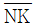
의 길이와 같은 것은?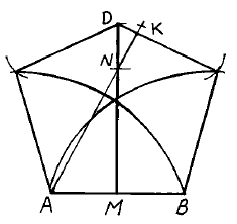
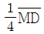
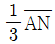
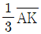
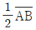
(정답률: 알수없음)
11. 물체의 실제 모양을 그대로 가장 잘 나타낼 수 있는 도법으로 평면위에 일정한 규칙에 따라 투상하여 평면도, 입면도 등으로 표현하는 도법은?
- 사투상도법
- 등각도법
- 정투상도법
- 부등각도법
(정답률: 알수없음)
12. 투시도법에서 기호 P.P가 뜻하는 것은?
- 지반면
- 화면
- 입점
- 시점
(정답률: 알수없음)
13. 석재의 느낌(무거우면서 차겁고 거칠다)은 디자인의 요소 중 무엇에 대한 표현인가?
- 공간
- 질감
- 동세
- 명암
(정답률: 알수없음)
14. 다음 그림에서 주황과 명도차를 가장 적게 배색하려면 어떤 색을 넣어야 하는가?
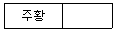
- 빨강
- 노랑
- 보라
- 풀색
(정답률: 알수없음)
15. 모자이크와 같이 색을 접근시켜서 혼합되어 보이는 것은?
- 가산혼합
- 감산혼합
- 인근혼합
- 병치혼합
(정답률: 알수없음)
16. 색료혼합의 결과에 대한 설명 중 올바른 것은?
- 명도는 낮아지고 채도는 높아진다.
- 명도는 높아지고 채도는 낮아진다.
- 명도, 채도가 모두 높아진다.
- 명도, 채도가 모두 낮아진다.
(정답률: 알수없음)
17. 먼셀의 기본 5색이 아닌 것은?
- 빨강
- 주황
- 노랑
- 파랑
(정답률: 알수없음)
18. 색채조절의 목적과 거리가 먼 내용은?
- 색을 이용하여 위험을 방지한다.
- 생활공간을 합리적으로 배색한다.
- 전자제품의 색을 검정색으로 골랐다.
- 일의 능률을 생각한 색채계획을 한다.
(정답률: 알수없음)
19. 색상, 명도를 같게하거나 유사하게 배색하였을 때의 느낌은?
- 활기있다.
- 온화하다.
- 동적이다.
- 다양하다.
(정답률: 알수없음)
20. 스프링 컴퍼스(Spring Compass)의 용도를 바르게 설명한 것은?
- 먹물로 선을 그을 때 사용한다.
- 지름이 큰원을 그리거나 긴 선분을 옮길때 사용한다.
- 작은 원이나 원호를 그릴 때 사용한다.
- 140-200mm의 직선 또는 원을 분할할 때 사용한다.
(정답률: 알수없음)
2과목: 광고도장재료
21. 마무리되는 치수를 기입하고 표시하는데 사용되는 치수선은?
- 자유 실선
- 가는 실선
- 굵은 실선
- 파단선
(정답률: 알수없음)
22. 다음 그림과 같은 도법은 무엇을 구하는 도법인가?
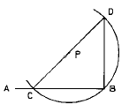
- 직각 3각형 CBD를 구하는 도법
- 직선
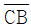
와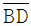
를 같은 간격으로 나누는 도법 - 정점 P에서 PB가 반지름이 되게 반원을 구하는 도법
- 직선
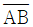
의 B점에서 직각수선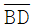
를 구하는 도법
(정답률: 알수없음)
23. 단단한 풀덩이와 같은 재료로 보일유에 녹여 쓰는 페인트는?
- 유성페인트
- 견련페인트
- 조합페인트
- 무광페인트
(정답률: 알수없음)
24. 천연에서 얻는 유지를 주된 전색제로 하는 도료로서 건성유의 피막이 건조 경화되는 성질을 이용한 도료는?
- 수성도료
- 유성도료
- 특수도료
- 섬유소계도료
(정답률: 알수없음)
25. 투명 래커로서 안료가 들어가지 않은 것은?
- 클리어 래커(clear lacquer)
- 래커 에나멜(lacquer enamel)
- 알루미늄 페인트(aluminum paint)
- 유성 바니스(oil varnish)
(정답률: 알수없음)
26. 발상지에 따라 이름지어진 것이며, 표면에 약간 거친 눈금이 있고 도면용이나 디자인용으로 많이 쓰는 재료는?
- 아트지
- 그라비어지
- 크라프트지
- 켄트지
(정답률: 알수없음)
27. 다음 중 돌출광고물 부착을 위한 기초 앵커(anchor)용 볼트로서 가장 좋은 것은?
- 철볼트
- 아연도금볼트
- 황동볼트
- 스텐레스볼트
(정답률: 알수없음)
28. 구리와 합금하여 청동을 만드는 금속은?
- 주석
- 아연
- 납
- 니켈
(정답률: 알수없음)
29. 네온 변압기 외부 케이스의 올바른 접지공사는?
- 제1종 접지공사
- 제2종 접지공사
- 제3종 접지공사
- 특수 접지공사
(정답률: 알수없음)
30. 단판(veneer)의 두께로 맞는 것은?
- 5mm 이하
- 10mm 이하
- 15mm 이상
- 20mm 이상
(정답률: 알수없음)
31. 다음 중 인조섬유가 아닌 것은?
- 케이폭
- 나일론
- 폴리에스테르
- 탄소섬유
(정답률: 알수없음)
32. 메타크릴 수지(아크릴 수지)에 관한 설명 중 잘못된 것은?
- 무색 투명하고 가볍다.
- 연화점은 100∼120℃ 이다.
- 유리에 비해 열팽창 계수가 작다.
- 성형품의 비중은 1.18 이다.
(정답률: 알수없음)
33. 목재를 잡아끄는 외력에 대한 내부 저항을 말하며, 조직의 평행방향이 극대, 섬유의 직각 방향이 극소인 강도 특성을 갖는 물리적 성질은?
- 휨강도
- 인장강도
- 전단강도
- 압축강도
(정답률: 알수없음)
34. 열경화성 플라스틱이란?
- 일단 굳어지면 다시 가열해도 변하지 않는다.
- 150℃를 전후로 변형되는 것이 대부분이다.
- 성형시에 화학적 변화를 일으키지 않는다.
- 대부분의 재료에서 투명 제품을 얻을 수 있다.
(정답률: 알수없음)
35. 목재의 심재와 변재에 대한 설명 중 틀린 것은?
- 변재는 심재보다 내구성이 약하다.
- 심재는 변재보다 신축이 크다.
- 심재는 변재보다 강도가 크다.
- 노목일수록 심재의 폭이 넓다.
(정답률: 알수없음)
36. 다음 연마지의 규격 중 가장 고운 것은?
- #80
- #120
- #180
- #220
(정답률: 알수없음)
37. 알부민 접착제에 관한 설명 중 잘못된 것은?
- 혈액 알부민과 난백 알부민이 있다.
- 아교 보다 접착력, 내수성이 우수하다.
- 동물성 접착제로 분류된다.
- 상온에서 자연 접착이 용이하다.
(정답률: 알수없음)
38. 목재의 재적단위에서 1사이(才)는?
- 1치각 10자 길이의 나무 부피
- 1인치각 10피트의 나무 부피
- 1치각 12자 길이의 나무 부피
- 1인치각 12피트의 나무 부피
(정답률: 알수없음)
39. 대리석의 쇄석, 백시멘트 등을 사용하고 표면을 물갈기하여 대리석 계통의 색조가 나도록 한 것은?
- 질석
- 암면
- 천연슬레이트
- 테라조
(정답률: 알수없음)
40. 건축화 조명의 장점이 아닌 것은?
- 발광면이 넓고, 눈부심이 적다.
- 부드러운 실내 분위기를 연출한다.
- 조명 기구가 보이지 않으므로 현대적인 감각을 준다.
- 구조상으로 보아 비용이 적게 든다.
(정답률: 알수없음)
3과목: 광고도장
41. 소매점내에 설치하는 광고로서 구매자나 행인들의 구매행위를 유발하도록 기획된 근접광고는?
- 전단광고
- 구매시점 광고
- 직접지명 광고
- 대중매체 광고
(정답률: 알수없음)
42. 다음 중 불특정 다수에게 소구되며, 가장 장기간에 걸친 광고 수단이 될 수 있는 것은?
- 신문광고
- TV광고
- 옥외광고
- 영화광고
(정답률: 알수없음)
43. 다음 영문자와 같이 가로 세로의 획이 같은 굵기로 되어 있는 서체는?
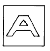
- 명조체
- 산쎄리프체
- 로만체
- 올드로만체
(정답률: 알수없음)
44. 문자디자인을 할 때 우선적으로 고려해야 될 사항과 거리가 먼것은?
- 균형감을 고려한다.
- 조화감을 고려한다.
- 되도록 크게, 개성있게 표현한다.
- 읽기 쉽게 표현한다.
(정답률: 알수없음)
45. 조선조 시대의 붓으로 다듬어진 궁체에 기본을 둔 붓의 흔적이 강한 한글 활자체는?
- 고딕체
- 명조체
- 그래픽체
- 공작체
(정답률: 알수없음)
46. 목제품 도장의 바탕조정시 사포질은 어떠한 방향으로 하는 것이 올바른가?
- 나무결에 직각된 방향
- 나무결방향
- 나무결에 45° 방향
- 나무결에 30° 방향
(정답률: 알수없음)
47. 아크릴에 굴곡이 많은 도안을 원안대로 자르고자 할 때, 다음 중 가장 적합한 기구는?
- 창칼
- 실톱
- 세모줄
- 니크롬선
(정답률: 알수없음)
48. 다음 중 네온전선이 사용되 것은?
- 네온변압기의 1차측 배선에
- 네온변압기의 2차측 배선에
- 네온변압기의 1차 및 2차측 배선에
- 네온관 제작시 네온관의 내부에
(정답률: 알수없음)
49. 옥외광고물등관리법에 의한 금지광고물이 아닌 것은?
- 청소년의 선도를 저해할 우려가 있는 것
- 잔인하게 표현하는 것
- 미풍양속을 해칠 우려가 있는 것
- 유흥업소의 홍보를 목적으로 하는 것
(정답률: 알수없음)
50. 붓자욱이 생기는 원인과 관계 없는 것은?
- 도막이 얇다.
- 붓이 빳빳하다
- 직사광선 때문이다.
- 도료의 점도가 높다.
(정답률: 알수없음)
51. 다음 중 도장용 기구인 롤러브러시의 단점은?
- 두꺼운 도장에 적합하지 않다.
- 손으로 직접 칠하기 어려운 넓은 부분에 적합하지 않다.
- 회전속도를 빠르게 하면 도료가 흩날린다.
- 평면등 면적이 넓은 피도장물을 능률적으로 도장 할 수 없다.
(정답률: 알수없음)
52. 피도물을 도료안에 담근 후 꺼내어 남은 도료를 제거하고 그대로 건조하는 방법으로 침지도장이라고도 하는 도장방법은?
- 뿜질도장
- 디핑도장
- 롤러도장
- 정전도장
(정답률: 알수없음)
53. 광고의 매체로서 잡지의 특성이 아닌 것은?
- 신속하고 적시에 광고가 가능하다.
- 명확한 독자층을 대상으로 할 수 있다.
- 회람 가능성이 높다.
- 광고의 반복성이 높다.
(정답률: 알수없음)
54. 옥외광고물의 표시금지 지역 또는 장소가 아닌 곳은?
- 도서관
- 대학교
- 관공서
- 철도역
(정답률: 알수없음)
55. 다음 칠붓(귀얄) 중 털의 탄력성이 가장 강해야 하는 것은?
- 페인트 붓
- 니스 붓
- 셀락 붓
- 수성 붓
(정답률: 알수없음)
56. 도장 작업의 안전관리에 관한 설명 중 틀린 것은?
- 복장 점검, 기구 점검을 수시로 한다.
- 자기 나름대로 편하고, 최상의 작업 방법을 택한다.
- 남은 재료는 반드시 정리한다.
- 화재나 폭발에 대비해야 한다.
(정답률: 알수없음)
57. 도장 작업장에서 유류(油類) 화재가 발생했다. 다음 중 가장 효율성이 떨어지는 소화기는?
- 포말 소화기
- 이산화탄소(CO2) 소화기
- 분말 소화기
- 할론(halon) 소화기
(정답률: 알수없음)
58. 스크린 인쇄 작업장 환경으로 부적합한 것은?
- 작업장의 조명은 반드시 어두운 전등이어야 한다.
- 환풍기가 있어서 환기가 잘 되어야 한다.
- 넓고 단단한 테이블은 절대적으로 필요한 물품이다.
- 테이블의 높이는 서서 작업하기에 편리하여야 한다.
(정답률: 알수없음)
59. 형광등의 특징을 설명한 것 중 틀린 것은?
- 형광등은 조명효율이 높고 백열등보다 수명이 길다.
- 희망하는 광색을 얻을 수 있다.
- 램프의 휘도가 낮다.
- 열이 많이 발생하며 광속 변동이 크다.
(정답률: 알수없음)
60. 다음 중 광고물 안전도 검사 업무를 위탁 받을 수 있는 사람은?
- 건축사법에 의한 건축사
- 세무서에 등록한 광고주
- 관할 관청에 등록한 광고물 제작자
- 광고물 제작협회 회원
(정답률: 알수없음)